Solar Field Parameters
Number of collector modules in a loop
Each collector module is composed of mirror collectors and a receiver, defined on the Collector and Receiver page. Every loop in the field has the same number of collector modules.
Number of subfield headers
The solar field is divided into subfields, connected with header piping. The number of field subsections determine the location and shape of header piping that delivers heat transfer fluid to the power block, which affects the heat loss calculation.
Header pipe roughness, m
The header pipe roughness is a measure of the internal surface roughness of the header and runner piping. SAM uses this value in calculation of the shear force and piping pressure drops.
Surface roughness is important in determining the scale of the pressure drop throughout the system. As a general rule, the rougher the surface, the higher the pressure drop (and parasitic pumping power load). The surface roughness is a function of the material and manufacturing method used for the piping.
Piping thermal loss coefficient, W/m2-K
The thermal loss coefficient that is used to calculate thermal losses from piping between receivers, crossover piping, header piping, and runner piping. The coefficient specifies the number of thermal watts lost from the system as a function of the piping surface area, and the temperature difference between the fluid in the piping and the ambient air (dry bulb temperature). The length of crossover piping and piping distance between assembiles are defined on the Collector and Receiver page.
Header pipe roughness, m
Average surface roughness of the header piping. The pipe roughness is used to calculate pressure loss through the piping system during the time-series simulation.
HTF pump efficiency
The isentropic efficiency of the heat transfer fluid pump in the solar field. The total work required to propel the HTF is divided by this efficiency value to give the electrical parasitic pumping requirement.
Tracking power per SCA, W/sca
The electric power in Watts required by the tracking mechanism of one collector during hours of operation.
Stow angle, degrees
The solar elevation angle (above the horizon) that sets the operational limit of the collector field in the evening hours. When the solar elevation angle falls below this value, the collector field will cease operation.
Deploy angle, degrees
The solar elevation angle (above the horizon) that sets the operational limit of the collector field in the morning hours. When the solar elevation angle rises above this value, the collector field will begin operation.
Design point wind velocity, m/s
The wind velocity at which receiver heat loss performance is evaluated for the design point (if applicable). This value is used to calculate receiver thermal loss at design when the Polynomial heat loss model is used on the Collector and Receiver page under the Receiver Geometry and Heat Loss group.
Design point ambient temperature, °C
The reference ambient temperature for the solar field, used as a basis for calculating thermal losses from the receivers and piping. Note that this value is not used as a reference for receiver thermal losses if the evacuated tube receiver option is selected on the Collector and Receiver page.
Startup temperature, °C
Temperature at which the field stops recirculating HTF and begins delivering to storage and heat sink
Collector startup energy, kWhe/sca
Amount of energy collector assembly needs to start delivering heat to the HTF. This represents the heat the collector absorbs to bring its temperature from ambient to operating conditions.
Length of runner pipe in power block, m
Length of piping connecting the power block to other system components. This value is used to calculate thermal losses in the system.
Heat Transfer Fluid
Field HTF fluid
The heat transfer fluid (HTF) used in the heat collection elements and headers of the solar field. SAM includes the following options in the HTF library: Solar salt, Caloria, Hitec XL, Therminol VP-1, Hitec salt, Dowtherm Q, Dowtherm RP, Therminol 59, and Therminol 66. You can also define your own HTF using the user-defined HTF fluid option.
Note. During the simulation, SAM counts the number of instances that the HTF temperature falls outside of the operating temperature limits in the table below. If the number of instances exceeds 50, it displays a simulation notice with the HTF temperature and time step number for the 50th instance.
If you define a custom fluid, SAM disables the minimum and maximum operating temperature variables and displays zero because it does not have information about the operating limits for the fluid you defined. You can check the time series temperature data in the results to ensure that they do not exceed the limits for your custom fluid.
Heat transfer fluids on the Field HTF Fluid list.
Name |
Type |
Min Optimal Operating Temp ºC |
Max Optimal Operating Temp* ºC |
Freeze Point ºC |
Comments |
|---|---|---|---|---|---|
Hitec Solar Salt |
Nitrate Salt |
238 |
593 |
238 |
|
Hitec |
Nitrate Salt |
142 |
538 |
142 |
|
Hitec XL |
Nitrate Salt |
120 |
500 |
120 |
|
Caloria HT 43 |
Mineral Hydrocarbon |
-12 |
315 |
-12 (pour point) |
used in first Luz trough plant, SEGS I |
Therminol VP-1 |
Mixture of Biphenyl and Diphenyl Oxide |
12 |
400 |
12 (crystallization point) |
Standard for current generation oil HTF systems |
Therminol 59 |
Synthetic HTF |
-45 |
315 |
-68 (pour point) |
|
Therminol 66 |
? |
0 |
345 |
-25 (pour point) |
|
Dowtherm Q |
Synthetic Oil |
-35 |
330 |
n/a |
|
Dowtherm RP |
Synthetic Oil |
n/a |
330 |
n/a |
|
*The maximum optimal operating temperature is the value reported as "maximum bulk temperature" on the product data sheets.
Data Sources for HTF Properties
Hitec fluids: Raade J, Padowitz D, Vaughn J. Low Melting Point Molten Salt Heat Transfer Fluid with Reduced Cost. Halotechnics. Presented at SolarPaces 2011 in Granada, Spain.
Caloria HT 43: Product comparison tool on Duratherm website.
Therminol Fluids: Solutia Technical Bulletins 7239115C, 7239271A, 7239146D.
Dowtherm Fluids: Dow Data Sheet for Q, no data sheet available for RP (high temp is from website): http://www.dow.com/heattrans/products/synthetic/dowtherm.htm).
User-defined solar field HTF fluid
To define your own HTF, choose User-defined for the Field HTF fluid and specify a table of material properties for use in the solar field. You must specify at least two data points for each property: temperature, specific heat, density, viscosity, and conductivity. See Custom HTF for details.
Field HTF min operating temp, ºC
The minimum HTF operating temperature recommended by the HTF manufacturer.
In some cases the minimum operating temperature may be the same as the fluid's freeze point. However, at the freeze point the fluid is typically significantly more viscous than at design operation temperatures, so it is likely that the "optimal" minimum operating temperature is higher than the freeze point.
Field HTF max operating temp, ºC
The minimum HTF operating temperature recommended by the HTF manufacturer.
Operation at temperatures above this value may result in degradation of the HTF and be unsafe. To avoid this, you may want to include a safety margin and use a maximum operating temperature value slightly lower than the recommended value.
Notes.
SAM displays the operating temperature limits for your reference so you can compare them to the field temperatures reported in the results to ensure that they do not exceed the limits. SAM does not adjust the system's performance to avoid exceeding these operating limits.
SAM only displays these limits for fluids that are in SAM's library. If you use a custom HTF instead of one from the SAM library, SAM disables the HTF operating temperature limits. In this case, you should use data from the fluid manufacturer specifications.
Freeze point heat trace activation temperature, °C
The solar field temperature below which auxiliary fossil backup heat is supplied to the solar field to prevent water from freezing in the equipment. You should set this value such that a reasonable margin exists between activation of the electric heat trace freeze protection equipment and the actual freezing point of water.
Min single loop flow rate, kg/s
The minimum allowable flow rate through a single loop in the field.
During time steps that produce a solar field flow rate that falls below the minimum value, the HTF temperature leaving the solar field will be reduced in temperature according to the heat added and minimum mass flow rate.
Max single loop flow rate, kg/s
The maximum allowable flow rate through a single loop in the field.
During time steps that produce a solar field flow rate that exceeds the maximum value, the solar field will be defocused according to the strategy selected by the user on the Solar Field page until the absorbed energy and corresponding mass flow rate fall below the maximum value.
Header design min flow velocity, m/s
The minimum allowable HTF flow velocity in the header piping under design conditions.
Header design max flow velocity, m/s
The maximum allowable HTF flow velocity in the header piping under design conditions. The minimum/maximum header flow velocities are used to determine the diameter of the header piping as flow is diverted to each loop in the field. After flow is distributed (or collected) to/from the loops, System Advisor calculates the flow velocity and resizes the piping to correspond to the maximum velocity if the calculated value falls outside of the user-specified range.
Plant Heat Capacity
Heat capacity of the balance of plant on the hot side, kWht/K-MWt
The thermal inertia of the hot header to account for any thermal inertia not accounted for in the HTF volume calculations: Thermal energy in kilowatt-hours per gross electricity capacity in megawatts needed to raise the hot side temperature one degree Celsius. The default value is 0.2 kWht/K-MWt.
Heat capacity of the balance of plant on the cold side, kWht/K-MWt
The thermal inertia of the cold header to account for any thermal inertia not accounted for in the HTF volume calculations: Thermal energy in kilowatt-hours per gross electricity capacity in megawatts needed to raise the hot side temperature one degree Celsius. The default value is 0.2 kWht/K-MWt.
Non-HTF heat capacity associated with each SCA, Wht/K-m
The thermal inertia of piping, joints, insulation, and other SCA components: The amount of thermal energy per meter of SCA length required to raise the temperature of piping, connectors, insulation, and other SCA components one degree K. The default value is 4.5 Wht/K-m.
HTF volume in single collector unit, L/m2-ap
The quantity of HTF contained in the solar field per square meter of aperture area. This value is used to calculate the internal energy of the HTF in the solar field during the time series simulation. You can calculate this value by considering the piping (or other) internal volume in the solar field transport system and dividing by the total reflector aperture area.
Note that this volume is used for both the Polynomial heat loss model and the Evacuated Tube Receiver model.
Land Area
The land area inputs determine the total land area in acres that you can use to estimate land-related costs in $/acres on the Installation Costs and Operating Costs pages.
Solar field area, acres
The actual aperture area converted from square meters to acres:
Solar Field Area (acres) = Actual Aperture (m²) × Row Spacing (m) / Maximum SCA Width (m) × 0.0002471 (acres/m²)
The maximum SCA width is the aperture width of SCA with the widest aperture in the field, as specified in the loop configuration and on the Collectors (SCA) page.
Non-solar field land area multiplier
Land area required for the system excluding the solar field land area, expressed as a fraction of the solar field aperture area. A value of one would result in a total land area equal to the total aperture area.
Total land area, acres
Land area required for the entire system including the solar field land area
Total Land Area (acres) = Solar Field Area (acres) × (1 + Non-Solar Field Land Area Multiplier)
The land area appears on the Installation Costs page, where you can specify land costs in dollars per acre.
Design Point
The design point variables show values at the Irradiation at Design Value that SAM uses to determine the system capacity in sizing calculations, and for area-based costs on the Installation Costs page.
For a description of the equations for the design point variables, see See Equations for Calculated Values.
Single loop aperture (m²)
The aperture area of a single loop of collectors, equal to the product of aperture width, reflective area, times the structure length times the number of collector assemblies per loop according to the distribution of the up to four collector types in the field. This area does not include non-reflective surface on the collector or non-reflective space between collectors.
Single Loop Aperture (m²) = Sum of the SCA Reflective Aperture Area (m²) values for each SCA in the loop
The SCA reflective aperture area for each SCA type is specified on the Collector and Receiver page.
Loop optical efficiency
The optical efficiency when incident radiation is normal to the aperture plane, not including end losses or cosine losses. This value does not include thermal losses from piping and the receivers.
Loop Optical Efficiency = Collector Optical Efficiency at Design × Receiver Optical Derate
The receiver and collector optical efficiency values are from the Collector and Receiver page.
Total loop conversion efficiency
The total conversion efficiency of the loop, including optical losses and estimated thermal losses. Used to calculate the required aperture area of the solar field.
Total required aperture, SM=1, m²
The exact mirror aperture area required to meet the design thermal output for a solar multiple of 1.0. SAM uses the required aperture to calculate the total aperture reflective area. The total aperture reflective area may be slightly more or less than the required aperture, depending on the collector dimensions you specify on the Collectors page.
Required number of loops, SM=1
The exact number of loops required to produce the total required aperture at a solar multiple of 1.0. This number may be a non-integer value, SAM rounds this value to the nearest integer to calculate the value of the actual number of loops variable.
Actual number of loops
The actual number of loops in the field, equal to the solar multiple times the required number of loops at a solar multiple of 1.0. The required number of loops is rounded to the nearest integer to represent a realistic field layout.
Total aperture reflective area, m²
The actual aperture area based on the actual number of loops in the field, equal to the single loop aperture times the actual number of loops.
Actual solar multiple
For Option 1 (solar multiple mode), the calculated solar multiple based on the actual (rounded) number of loops in the field. For Option 2 (field aperture mode), the solar multiple value corresponding to the thermal output of the field based at design point: The total aperture reflective area divided by the field thermal output.
Field thermal output (MWt)
The thermal energy delivered by the solar field under design conditions at the actual solar multiple.
Loop inlet HTF temperature (ºC)
The temperature of HTF at the loop inlet under design conditions. The actual temperature during operation may differ from this value. SAM sets the power cycle's design outlet temperature equal to this value.
Loop outlet HTF temperature (ºC)
The temperature of the HTF at the outlet of the loop under design conditions. During operation, the actual value may differ from this set point. This value represents the target temperature for control of the HTF flow through the solar field and will be maintained when possible.
Steady State Design Point Results
**NEED GENERAL DESCRIPTION OF HOW THE DESIGN POINT VARIABLES ABOVE**
Equations for Calculated Values
The following table shows the equations SAM uses to calculate the values for the variables above that you cannot edit. (In Windows, the calculated values appear in blue.)
Variable Name |
Equation |
Notes |
Single loop aperture |
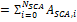 |
Sum of aperture area of each individual collector in the loop |
Loop optical efficiency |
= Aggregate Collector Efficiency * Aggregate Receiver Optical Efficiency |
Efficiencies are calculated elsewhere |
Total loop conversion efficiency |
= Loop Optical Efficiency * Receiver Heat Loss Efficiency |
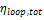 used in Total Required Aperture equation |
Total required aperture, SM=1 |
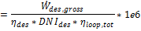 |
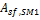 used in Required Number of Loops equation |
Required number of loops, SM=1 |
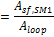 |
|
Actual number of loops |
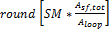 |
Equation depends on solar field option: Option 1 uses the solar multiple value that you specify, Option 2 uses the field aperture area that you specify. |
Total aperture reflective area |
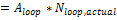 |
|
Actual solar multiple |
|
Equation depends on solar field option: Option 1 is the solar multiple value that you specify, Option 2 is the ratio. |
Field thermal output |
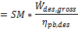 |
pb = power block |
Solar field area |
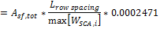 |
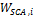 is the aperture width of each collector i in the loop |
Total land area |
= Solar field area * Non-Solar field land area multiplier |
|
Mirror Washing
SAM reports the water usage of the system in the results based on the mirror washing variables. The annual water usage is the product of the water usage per wash and 365 (days per year) divided by the washing frequency.
Water usage per wash
The volume of water in liters per square meter of solar field aperture area required for periodic mirror washing.
Washes per year
The number of washes in one year.
Solar Multiple
Sizing the solar field of a parabolic trough or linear Fresnel system in SAM involves determining the optimal solar field aperture area for a system at a given location. In general, increasing the solar field area increases the system's electric or thermal output, thereby reducing the project's levelized cost of energy. However, during times when there is enough solar resource, too large of a field will produce more thermal energy than the power cycle or heat sink and other system components can handle. Also, as the solar field size increases beyond a certain point, the higher installation and operating costs outweigh the benefit of the higher output.
An optimal solar field area should:
•Maximize the amount of time in a year that the field generates sufficient thermal energy to drive the power cycle or heat sink at its rated capacity.
•Minimize installation and operating costs.
•Use thermal energy storage and backup power equipment efficiently and cost effectively.
The problem of choosing an optimal solar field area involves analyzing the tradeoff between a larger solar field that maximizes the system's electrical output and project revenue, and a smaller field that minimizes installation and operating costs.
The levelized cost of energy (LCOE or LCOH) is a useful metric for optimizing the solar field size because it includes the amount of electricity or heat generated by the system, the project installation costs, and the cost of operating and maintaining the system over its life. Optimizing the solar field involves finding the solar field aperture area that results in the lowest LCOE or LCOH. For systems with thermal energy storage systems, the optimization involves finding the combination of field area and storage capacity that results in the lowest LCOE or LCOH.
Option 1 and Option 2
SAM's parabolic trough and linear Fresnel models provide two options for specifying the solar field aperture area on the System Design page:
•Option 1: You specify the solar field area as a multiple of the power cycle (design turbine gross output) or heat sink rated capacity (heat sink thermal power), and SAM calculates the solar field aperture area in square meters required to achieve the rated capacity.
•Option 2: You specify the aperture area in square meters independently of the power cycle or heat sink rated capacity.
If your analysis involves a known solar field area, you should use Option 2 to specify the solar field aperture area.
If your analysis involves optimizing the solar field area for a specific location, or choosing an optimal combination of solar field aperture area and thermal energy storage capacity, then you should choose Option 1, and follow the procedure described below to size the field.
Solar Multiple
Note. The description in this section refers to the power cycle of a system that generates electricity. For industrial process heat (IPH) systems, the same principles apply, but are determined by the heat sink capacity rather than the power cycle capacity.
The solar multiple makes it possible to represent the solar field aperture area as a multiple of the power cycle rated capacity. A solar multiple of one (SM=1) represents the solar field aperture area that, when exposed to solar radiation equal to the design point DNI (or irradiation at design), generates the quantity of thermal energy required to drive the power cycle at its rated capacity (design gross output), accounting for thermal and optical losses.
Because at any given location the number of hours in a year that the actual solar resource is equal to the design point DNI is likely to be small, a solar field with SM=1 will rarely drive the power cycle at its rated capacity. Increasing the solar multiple (SM>1) results in a solar field that operates at its design point for more hours of the year and generates more electricity.
For example, consider a system with a power cycle design gross output rating of 111 MW and a solar multiple of one (SM=1) and no thermal storage. The following frequency distribution graph shows that the power cycle never generates electricity at its rated capacity, and generates less than 80% of its rated capacity for most of the time that it generates electricity:
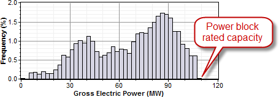
For the same system with a solar multiple chosen to minimize LCOE (in this example SM=1.5), the power cycle generates electricity at or slightly above its rated capacity almost 15% of the time:
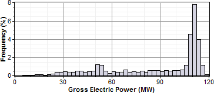
Adding thermal storage to the system changes the optimal solar multiple, and increases the amount of time that the power cycle operates at its rated capacity. In this example, the optimal storage capacity (full load hours of TES) is 3 hours with SM=1.75, and the power cycle operates at or over its rated capacity over 20% of the time:
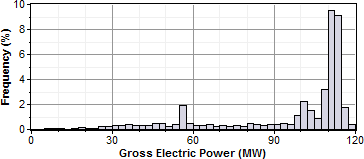
Note. For clarity, the frequency distribution graphs above exclude nighttime hours when the gross power output is zero.
Reference Weather Conditions for Field Sizing
The design weather conditions values are reference values that represent the solar resource at a given location for solar field sizing purposes. The field sizing equations require three reference condition variables:
•Ambient temperature
•Direct normal irradiance (DNI)
•Wind velocity
The values are necessary to establish the relationship between the field aperture area and power cycle rated capacity for solar multiple (SM) calculations.
Note. The design values are different from the data in the weather file. SAM uses the design values to size the solar field before running a simulation. During the simulation, SAM uses data from the weather file you choose on the Location and Resource page.
The reference ambient temperature and reference wind velocity variables are used to calculate the design heat losses, and do not have a significant effect on the solar field sizing calculations. Reasonable values for those two variables are the average annual measured ambient temperature and wind velocity at the project location. For the physical trough model, the reference temperature and wind speed values are hard-coded and cannot be changed. The linear Fresnel and generic solar system models allow you to specify the reference ambient temperature value, but not the wind speed. The empirical trough model allows you to specify both the reference ambient temperature and wind speed values.
The reference direct normal irradiance (DNI) value, on the other hand, does have a significant impact on the solar field size calculations. For example, a system with reference conditions of 25°C, 950 W/m2, and 5 m/s (ambient temperature, DNI, and wind speed, respectively), a solar multiple of 2, and a 100 MWe power cycle, requires a solar field area of 871,940 m2. The same system with reference DNI of 800 W/m2 requires a solar field area of 1,055,350 m2.
In general, the reference DNI value should be close to the maximum actual DNI on the field expected for the location. For systems with horizontal collectors and a field azimuth angle of zero in the Mohave Desert of the United States, we suggest a design irradiance value of 950 W/m2. For southern Spain, a value of 800 W/m2 is reasonable for similar systems. However, for best results, you should choose a value for your specific location using one of the methods described below.
Linear collectors (parabolic trough and linear Fresnel) typically track the sun by rotating on a single axis, which means that the direct solar radiation rarely (if ever) strikes the collector aperture at a normal angle. Consequently, the DNI incident on the solar field in any given hour will always be less than the DNI value in the resource data for that hour. The cosine-adjusted DNI value that SAM reports in simulation results is a measure of the incident DNI.
Using too low of a reference DNI value results in excessive "dumped" energy: Over the period of one year, the actual DNI from the weather data is frequently greater than the reference value. Therefore, the solar field sized for the low reference DNI value often produces more energy than required by the power cycle, and excess thermal energy is either dumped or put into storage. On the other hand, using too high of a reference DNI value results in an undersized solar field that produces sufficient thermal energy to drive the power cycle at its design point only during the few hours when the actual DNI is at or greater than the reference value.
To choose a reference DNI value:
1.Choose a weather file on the Location and Resource page.
2.For systems with storage, specify the storage capacity and maximum storage charge rate defined on the System Design page.
3.Click Simulate.
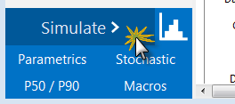
4.On the Results page, click Statistics.
5.Read the maximum annual value of Field collector DNI-cosine product (W/m2), and use this value for the reference DNI.
An alternative method is to choose a reference DNI value on the System Design page to minimize collector defocusing, to do this, try different values for Design point DNI on the System Design page until you find a value that minimizes the total Field fraction of focused SCAs output variable on the Statistics tab. You could also use parametric simulations to find the reference DNI value.
Custom HTF
If the heat transfer fluid you want to use in the solar field is not included in the Field HTF Fluid list, you can define a custom heat transfer fluid using the User-defined option in the list. To define a custom fluid, you need to know the following properties for at least two temperatures:
•Temperature, ºC
•Specific heat, kJ/kg-K
•Density, kg/m³
•Viscosity, Pa-s
•Kinematic viscosity, m²-s (not required, see note below)
•Conductivity, W/m-K
•Enthalpy, J/kg (not required, see note below)
Note. The kinematic viscosity and enthalpy data in the table are not used by the CSP models. These properties are redundant: Kinematic viscosity is the ratio of viscosity to density, and the heat balance equations use specific heat instead of enthalpy.
To define a custom heat transfer fluid:
1.In the Field HTF fluid list, click User-defined.
2.In the Edit Material Properties table, change Number of data points to 2 or higher. The number should equal the number of temperature values for which you have data.
3.Type values for each property in the table.
You can also import data from a text file of comma-separated values. Each row in the file should contain properties separated by commas, in the same the order that they appear in the Edit Material Properties window. Do not include a header row in the file.
Notes
Each row in the materials property fluid table must be for a set of properties at a specific temperature. No two rows should have the same temperature value.
SAM calculates property values from the table using linear interpolation.
The rows in the table must sorted by the temperature value, in either ascending or descending order.
The physical trough model uses the temperature, specific heat, density, viscosity, and conductivity values. It ignores the enthalpy and kinematic viscosity values (the empirical trough model does use those values).
For the physical trough model, if you specify user-defined HTF fluids with the same properties for the solar field and thermal storage system, on the Thermal Storage page, SAM disables the Hot side HX approach temp and Cold side HX approach temp inputs, and sets them to zero internally to represent a system with no heat exchanger. (When the hot and cold side approach temperatures are zero, Thermal storage exergetic efficiency is one.)